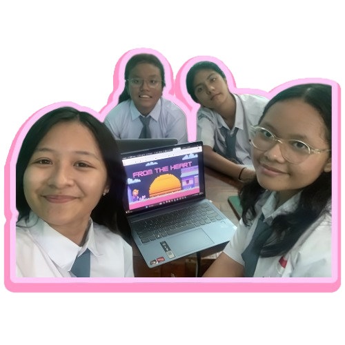

Welcome to From The Heart, your trusted destination for exploring the depths of love through our unique Love Meter. At From The Heart, we believe
that love is a universal language that transcends boundaries and connects souls in profound ways.
Our Love Meter is more than just a tool—it's a beacon of insight and understanding that helps you gauge the strength and compatibility of your
relationships. Whether you're embarking on a new romance or nurturing a long-term partnership, our Love Meter provides personalized assessments
to illuminate the dynamics at play and guide you towards deeper connection and fulfillment. Driven by a passion for helping hearts unite, our team
at From The Heart is dedicated to providing you with accurate, insightful, and compassionate guidance on matters of love and relationships. We
understand that every love story is unique, and our mission is to empower you to navigate the twists and turns of romance with confidence and
clarity. So, whether you're seeking validation for a budding romance, reassurance about the strength of your bond, or simply curious about the
compatibility between you and your partner, trust in From The Heart to be your trusted companion on the journey through love. Let our Love Meter
be your guide as you explore the boundless depths of the heart.

THE TEAM
Meet the heart-centered individuals who power our Love Meter and guide you on your journey through the realms of romance :
💝 Jelita Lusia as The Web Developer
A web developer is a programmer who develops World Wide Web applications using a client–server model. The applications typically use HTML, CSS,
and JavaScript in the client, and any general-purpose programming language in the server. HTTP is used for communications between client and
server. A web developer may specialize in client-side applications (Front-end web development), server-side applications (back-end
development), or both (full-stack development)
An application developer is a software engineer who designs, creates, tests, programs and updates applications for a particular device like
mobile or web or a specific operating system. Application developers typically specialise in one area of development, like a mobile phone
application. They are also involved in performing regular updates on applications and releasing the latest update to the end-users.
A Website content writer or web content writer is a person who specializes in providing content for websites. Every website has a specific
target audience and requires the most relevant content to attract business. Content should contain keywords (specific business-related terms,
which internet users might use in order to search for services or products) aimed towards improving a website's SEO. A website content writer
who also has knowledge of the SEO process is referred to as an SEO Content Writer.
A graphic designer is a professional who practices the discipline of graphic design, either within companies or organizations or independently.
They are professionals in design and visual communication, with their primary focus on transforming linguistic messages into graphic
manifestations, whether tangible or intangible. They are responsible for planning, designing, projecting, and conveying messages or ideas
through visual communicatio
Together, Jelita, Jessica, Carina, and Anju form the beating heart of From The Heart, united in their mission to help you navigate the twists
and turns of love with grace, wisdom, and compassion. Trust in our team to light up your path to love and happiness, one heartbeat at a time.